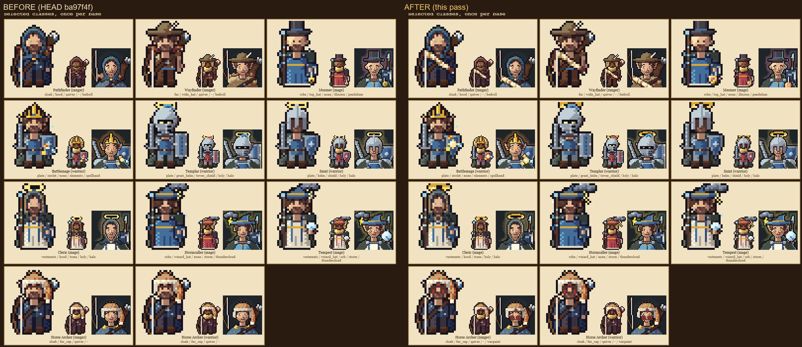

The new level-18 Sharpshooter branch, plus this round's class art pass.
Bedroll worn across the chest (Pathfinder, Wayfinder), two-ring halos (Templar, Saint, Cleric), bigger thunderclouds (Stormcaller, Tempest), Battlemage spell-light, Mesmer's watch, Horse Archer warpaint. Left: before, right: after.
